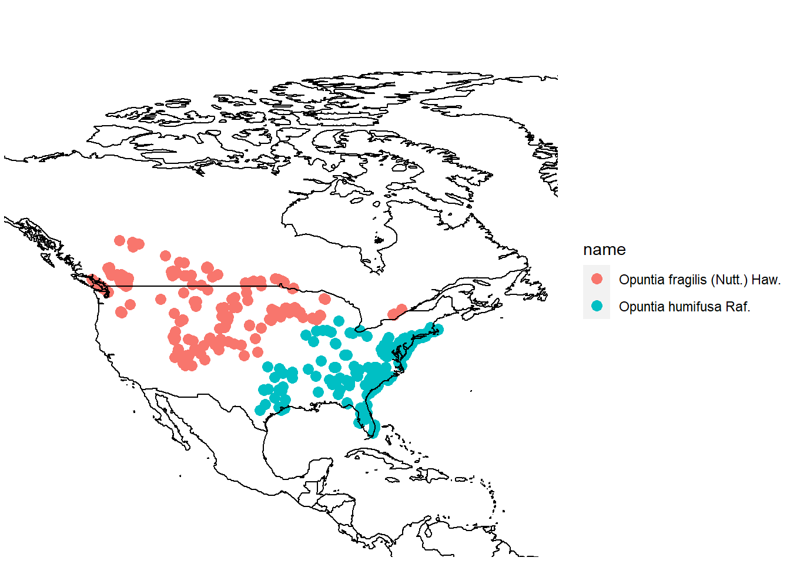

At its core, plant taxonomy is the science of naming and grouping plants based on their shared traits. Throughout this course we’ve seen how growth habit, morphology, and geographic distribution can provide valuable information about how to classify and define plants. When we consider geographic information, we are asking questions like “do the plants occupy similar or distinct habitats?” and “are the ranges of these plants disjunct or overlapping?”. Depending on the answer to these questions, our decision to group or separate plants (and give them different names) can be changed dramatically. In this R activity, we’ll demonstrate how we can use publically available occurence data to create distribution maps for plants and use these maps to make taxonomic decisions.
Before starting this week’s tutorial you will have:
completed R Activity 1 and the pre-readings assigned there,
insert GBIF video tutorial here? Or have them do it in unit 1 (note: GBIF intro material lives as comments in Lab 6),
selected your favourite plant group for creating a species distribution map (not sure if we’re doing this)
By the end of this tutorial you will have:
experience manipulating and mapping species distribution data in R,
familiarity with GBIF and the types of data that can be obtained,
More?
In previous labs we familiarized ourselves with GBIF, R, and RStudio. Today we’ll be running a script that collects, filters, and maps distribution data for two species of “prickly pear” cacti Opuntia fragilis Nutt. Haw. and Opuntia humifusa Raf. (Opuntioideae: Cactaceae).
First let’s install the required packages:
These packages are designed for connecting with the GBIF database (rgbif, spocc, taxize), filtering data (tidyverse), and mapping (mapr). Once installed, use the library() function to attach the packages (we’ll also attach tidyverse to help with data wrangling and plotting):
Now let’s get some occurence data from GBIF!
# get taxon ID from GBIF
group1_ids <-
taxize::get_gbifid(sci=c('Opuntia humifusa'), rank='species', limit = 1000)## ══ 1 queries ═══════════════##
## Retrieving data for taxon 'Opuntia humifusa'## ✔ Found: Opuntia humifusa
## ══ Results ═════════════════
##
## ● Total: 1
## ● Found: 1
## ● Not Found: 0The get_gbifid() function searches GBIF for taxon IDs associated with your search query (“Opuntia humifusa”). We wrote the code as taxize::get_gbifid() to be clear about which package the function originated from (taxize), but this isn’t usually necessary. The <- operator stores the results in an object that we named group1_ids. By storing the results in an object we can later return to the object and inspect it, subset it, and pipe it to other functions. The output message is telling us that the get_gbif() function found 1 taxon ID for Opuntia humifusa. This is ideal because it means that there aren’t any synonyms to deal with! To find out what the taxon ID is, we’ll simply call our object group1_ids:
## [1] "5384047"
## attr(,"class")
## [1] "gbifid"
## attr(,"match")
## [1] "found"
## attr(,"multiple_matches")
## [1] FALSE
## attr(,"pattern_match")
## [1] FALSE
## attr(,"uri")
## [1] "https://www.gbif.org/species/5384047"Among other things, the output tells us that the taxon ID is "5384047". Now, let’s use our ‘taxon ID object’ to download occurence data directly from GBIF (this can take a minute depending on how many records there are for a taxon):
In this code we’ve created a new object called group1_metadata. This object contains occurence records found by the occ() function, where we specified our taxon ID (contained in group1_ids) and told the function that we wanted our data from = gbif (instead of another database) and that we wanted a maximum of 1000 records. Let’s inspect the structure of the group1_metadata object:
## List of 9
## $ gbif :List of 2
## ..- attr(*, "class")= chr "occdatind"
## $ bison :List of 2
## ..- attr(*, "class")= chr "occdatind"
## $ inat :List of 2
## ..- attr(*, "class")= chr "occdatind"
## $ ebird :List of 2
## ..- attr(*, "class")= chr "occdatind"
## $ ecoengine:List of 2
## ..- attr(*, "class")= chr "occdatind"
## $ vertnet :List of 2
## ..- attr(*, "class")= chr "occdatind"
## $ idigbio :List of 2
## ..- attr(*, "class")= chr "occdatind"
## $ obis :List of 2
## ..- attr(*, "class")= chr "occdatind"
## $ ala :List of 2
## ..- attr(*, "class")= chr "occdatind"
## - attr(*, "class")= chr "occdat"
## - attr(*, "searched")= chr "gbif"The output tells us that group1_metadata is a List object with 9 named elements. We are specifically interested in the named element $gbif, so we can simplify our object by subsetting:
While writing this code, we discovered that the group1_metadata object is pretty complex and with lots of layers! The code above says to take the large object group1_metadata and select the element named $gbif. Then, within the element $gbif, select the sub-element $data. Within the sub-element $data, select the sub-sub-element 5384047 (the taxon ID for O. humifusa). Inception.gif.
Ok, we now have some tidy GBIF data:
## # A tibble: 1,000 x 98
## name longitude latitude issues prov key scientificName datasetKey
## <chr> <dbl> <dbl> <chr> <chr> <chr> <chr> <chr>
## 1 Opun… -73.8 40.6 gass84 gbif 2543… Opuntia humif… 50c9509d-…
## 2 Opun… -89.5 34.7 cdrou… gbif 2550… Opuntia humif… 50c9509d-…
## 3 Opun… -80.2 32.6 cdrou… gbif 2550… Opuntia humif… 50c9509d-…
## 4 Opun… 35.2 44.9 cdrou… gbif 2557… Opuntia humif… 50c9509d-…
## 5 Opun… -75.3 38.9 cdrou… gbif 2557… Opuntia humif… 50c9509d-…
## 6 Opun… 11.2 46.7 cdrou… gbif 2563… Opuntia humif… 50c9509d-…
## 7 Opun… -81.3 27.2 cdrou… gbif 2563… Opuntia austr… 50c9509d-…
## 8 Opun… -81.3 27.2 cdrou… gbif 2563… Opuntia austr… 50c9509d-…
## 9 Opun… -81.9 30.1 cdrou… gbif 2563… Opuntia mesac… 50c9509d-…
## 10 Opun… 10.3 46.0 cdrou… gbif 2563… Opuntia humif… 50c9509d-…
## # … with 990 more rows, and 90 more variables: publishingOrgKey <chr>,
## # installationKey <chr>, publishingCountry <chr>, protocol <chr>,
## # lastCrawled <chr>, lastParsed <chr>, crawlId <int>, basisOfRecord <chr>,
## # taxonKey <int>, kingdomKey <int>, phylumKey <int>, classKey <int>,
## # orderKey <int>, familyKey <int>, genusKey <int>, speciesKey <int>,
## # acceptedTaxonKey <int>, acceptedScientificName <chr>, kingdom <chr>,
## # phylum <chr>, order <chr>, family <chr>, genus <chr>, species <chr>,
## # genericName <chr>, specificEpithet <chr>, taxonRank <chr>,
## # taxonomicStatus <chr>, dateIdentified <chr>,
## # coordinateUncertaintyInMeters <dbl>, stateProvince <chr>, year <int>,
## # month <int>, day <int>, eventDate <date>, modified <chr>,
## # lastInterpreted <chr>, references <chr>, license <chr>,
## # geodeticDatum <chr>, class <chr>, countryCode <chr>, recordedByIDs <list>,
## # identifiedByIDs <list>, country <chr>, rightsHolder <chr>,
## # identifier <chr>, `http://unknown.org/nick` <chr>, verbatimEventDate <chr>,
## # datasetName <chr>, verbatimLocality <chr>, gbifID <chr>,
## # collectionCode <chr>, occurrenceID <chr>, taxonID <chr>,
## # catalogNumber <chr>, recordedBy <chr>,
## # `http://unknown.org/occurrenceDetails` <chr>, institutionCode <chr>,
## # rights <chr>, eventTime <chr>, identifiedBy <chr>, identificationID <chr>,
## # occurrenceRemarks <chr>, projectId <chr>, individualCount <int>,
## # informationWithheld <chr>, recordNumber <chr>, municipality <chr>,
## # language <chr>, type <chr>, ownerInstitutionCode <chr>,
## # identificationRemarks <chr>, occurrenceStatus <chr>,
## # dataGeneralizations <chr>, taxonConceptID <chr>,
## # infraspecificEpithet <chr>, locality <chr>, habitat <chr>,
## # `http://unknown.org/recordId` <chr>, county <chr>,
## # otherCatalogNumbers <chr>, startDayOfYear <chr>,
## # reproductiveCondition <chr>, collectionID <chr>, locationRemarks <chr>,
## # verbatimElevation <chr>, nomenclaturalCode <chr>, institutionID <chr>,
## # identificationVerificationStatus <chr>The output is pretty big and messy! The output tells us that it’s a tibble (a type of spreadsheet) with 1000 rows and 101 columns. Each row is a record of where Opuntia humifusa has been found or collected. Each column is some information associated with that record. While some of the columns are useful (e.g. the latitude and longitude), most columns aren’t needed (we’ll get rid of them later). Before we get to mapping, we should check our data for synonyms. The unique() function tells us how many unique entries exist within a column:
## [1] "Opuntia humifusa Raf." "Opuntia austrina Small"
## [3] "Opuntia mesacantha Raf." "Opuntia ammophila Small"
## [5] "Opuntia humifusa var. humifusa"When we searched GBIF for “O. humifusa” some synonyms were included in the results. We can choose to include or exclude these in the next step.
Let’s take a look at which countries the records come from:
## [1] "United States of America" "Ukraine"
## [3] "Italy" "Spain"
## [5] "Bulgaria" "Brazil"
## [7] "Canada" "Australia"
## [9] "Russian Federation" NA
## [11] "France" "Switzerland"
## [13] "Netherlands" "Germany"
## [15] "India" "Austria"
## [17] "Belgium"Even though Opuntia is a North and Central American clade, some records show up in Europe. These are often specimens in herbaria. We’ll create a new object that filters these out:
library(dplyr)
group1_fil <-
group1_simple %>%
dplyr::filter(scientificName== 'Opuntia humifusa Raf.' &
country == c('Canada', 'United States of America')) %>%
select(1:3)In the code above, we used the filter() function to get rid of synonyms and records outside of North America. We also used the select() function to choose the columns needed for mapping. To string together these functions, we used the pipe operator %>% (see R Activity 1).
Obtaining the data for O. fragilis is almost the same, but because there are many synonyms for this taxon, we’ll avoid using the GBIF ‘backbone taxonomy’ and be more specific in our search. This means including the authority names and also setting method = 'lookup (the default is method = 'backbone'):
group2_ids <-
taxize::get_gbifid(sci=c('Opuntia fragilis (Nutt.) Haw.'), rank='species', limit = 1000, method = 'lookup')## ══ 1 queries ═══════════════##
## Retrieving data for taxon 'Opuntia fragilis (Nutt.) Haw.'## ✔ Found: Opuntia fragilis (Nutt.) Haw.
## ══ Results ═════════════════
##
## ● Total: 1
## ● Found: 1
## ● Not Found: 0From here, the same code is run as for O. humifusa :
# get occurence data from GBIF
group2_metadata <-
spocc::occ(ids=group2_ids, from='gbif', limit = 1000)
# discard unnecessary metadata and preserve occurence data
# NOTE: the '$' symbol subsets your data. To narrow in
# on the occurence data, insert the taxon ID from 'group2_ids'
# into the end of the subset string.
# this ID will be a different ID than Opuntia humifusa
group2_simple <- group2_metadata$gbif$data$`5384113`
# look for species synonyms
unique(group2_simple$scientificName)
# look for misplaced country records
unique(group2_simple$country)
# filter out synonyms
# filter out countries
# also, narrow in on records that are 'human observations'
library(dplyr)
group2_fil <-
group2_simple %>%
dplyr::filter(scientificName== 'Opuntia fragilis (Nutt.) Haw.' &
country == c('Canada', 'United States of America')) %>%
dplyr::select(1:3)We can then use the full_join() function to combine our two Opuntia datasets:
## Joining, by = c("name", "longitude", "latitude")Now we’ll use the map_ggplot() function to map our combined occurence data. The coord_fixed() function adjusts the mapping window, using latitude and longitude as parameters.:
library(ggplot2)
library(mapr)
map_ggplot(combined_data) +
coord_fixed(xlim = c(-135, -55 ), ylim = c(10, 90)) 
MB: Not sure if we’re going this route.. let’s discuss!
MB: Basically, the existing code can be modified to replace Opuntia with any other plant name. Re-running the code will create a map for any species that GBIF has records for. Of course, some taxa are have more complicated nomenclature, and sometimes weird entries make it onto the map. In these cases, a little troubleshooting is required. Also, if one wanted to search for genera, families, orders, etc. some additional modifications are needed. For the majority of students in BIOL413, generating their own maps didn’t require my intervention.